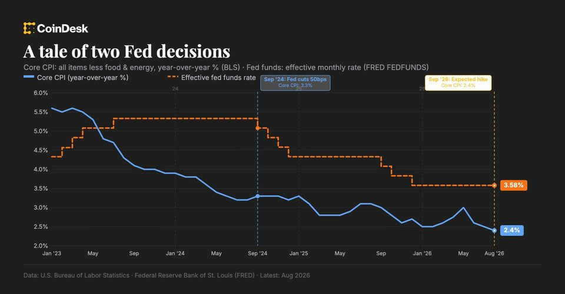

September 14, 2026
Daily headline set with source diversity, cleaned links, and local static rendering.
US Republicans send ‘final' CLARITY Act offer to Democrats
The 635-page revised proposal includes Trump-backed ethics provisions and comes just two days before a key procedural vote.
Hackers mint trillions in fake Bitcoin, but 15 BTC bridge recovery leaves liquidity providers unpaid
The native bridge remains paused as a 20% bounty window closes Sep. 13 and final accounting continues. The post Hackers mint trillions in fake Bitcoin, but 15 BTC bridge recovery leaves liquidity providers unpaid...
Is Clarity dead? A vibes-based analysis: State of Crypto
Is Clarity dead? A vibes-based analysis: State of Crypto
AI Agents Spending Money Online? New Research Says Not Really
TRM examined roughly $52.7 million across 198.9 million settlements using the x402 protocol. Most of it isn’t coming from AI agents, it says.
Revolut attackers threaten daily customer data leaks
Attackers reportedly published identity documents and selfies belonging to Revolut customers and threatened to release more data each day until the fintech pays.
Audited DeFi protocols lost $885M to attacks that occurred completely outside their audit scopes
The ack3-affiliated preprint found a 72.1% outside-scope share after excluding two H1 2026 outliers, while August incidents add operational context. The post Audited DeFi protocols lost $885M to attacks that occurred...
Quantum-proof blockchain: why math, not machines, holds the key
Quantum-proof blockchain: why math, not machines, holds the key

Revolut Leaks Passports, Bitcoin Transaction Histories to Fake Government Request
The fintech company fulfilled a fraudulent information request sent from a government agency's own email domain, exposing ID documents and full crypto transaction histories for a "limited" number of users.
Crypto's biggest week ever? Swarm fears prompt AI slowdown: Hodler's Digest
Crypto’s moment of CLARITY finally arrives with a key Senate vote on Tuesday. AI swarm fears prompt development slowdown, with some predicting big falls in AI stock prices.
Coinbase gives community banks a stablecoin bridge while supplying infrastructure underneath
Banks retain the customer interface, while undisclosed pricing, data, compliance and settlement terms will determine who captures the value. The post Coinbase gives community banks a stablecoin bridge while supplying...

Fed rate hike is about Wall Street, not inflation, says economist
Fed rate hike is about Wall Street, not inflation, says economist

GPT-6 Astra Users Say OpenAI's Newest Model Got Dumber. It Happened Before, Too
A week after launch, complaints are rolling in from users that GPT-6 Astra has been nerfed. OpenAI's last model went through the same cycle in July.